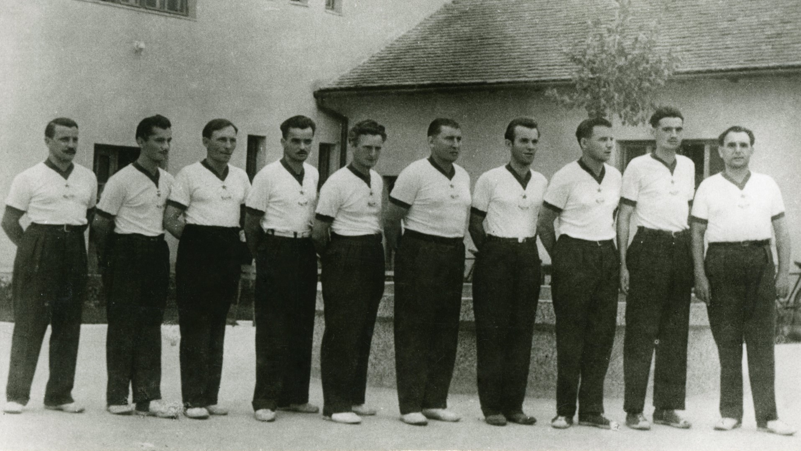
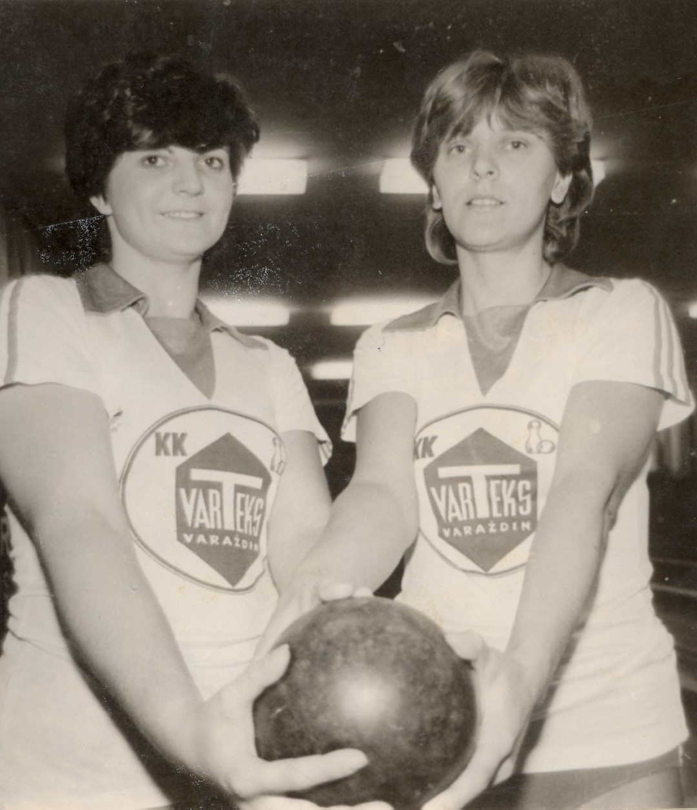

Kuglanje
KRONOLOGIJA
1884.
osnovan Varaždinski keglarski savez
1912.
u dvorištu Vatrogasnog doma postoji kuglana
1952.
sagrađena nova kuglana kod Varteksa
1954.
kuglači Tekstilca osvajaju naslov prvaka Hrvatske i prvaka Jugoslavije, Dragutin Malec pojedinačno prvak Hrvatske, a Duje Smoljanović prvak Jugoslavije


Kuglači Tekstilca, 1954., GMV 106545
1957.
Josip Vinković, pojedinačno, prvak Jugoslavije
1972.
kuglači Varteksa drugi na državnom prvenstvu drugi
1983.
kuglačice Varteksa prvakinje države (Darinka Hađikon i Vlasta Popadić prvakinje Jugoslavije u paru
1988.
Vesna Žunek na svjetskom prvenstvu u Budimpešti prva, a u paru brončana
